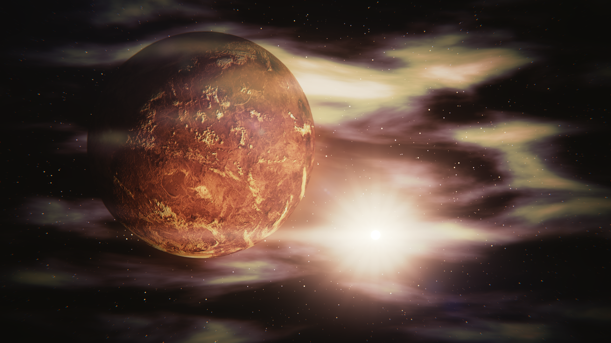

Überblick über die Venus
Die Venus, auch als "Abendstern" oder "Morgenstern" bekannt, ist der zweitinnerste Planet unseres Sonnensystems. Mit ihrer dicken Atmosphäre und extremen Temperaturen ist die Venus eine der am wenigsten erforschten Planetenoberflächen. Novus Space Exploration ist darauf ausgerichtet, die Geheimnisse dieser Schwester der Erde zu lüften.
Atmosphärische Besonderheiten
Die dichte Atmosphäre der Venus, vorwiegend bestehend aus Kohlendioxid und Wolken aus Schwefelsäure, schafft extreme Bedingungen auf der Oberfläche. Unsere Missionen zielen darauf ab, die atmosphärischen Phänomene zu verstehen, darunter der Treibhauseffekt und die rätselhafte Superrotation, bei der die Atmosphäre schneller als die Planetenrotation selbst rotiert.
Oberflächenforschung
Die Venus-Oberfläche ist von vulkanischen Ebenen, Bergketten und Hochlandregionen geprägt. Novus Space Exploration plant Missionen mit Landesonden, um die geologische Beschaffenheit, die Zusammensetzung und die mögliche Existenz von vulkanischer Aktivität zu erforschen. Unsere fortschrittlichen Instrumente werden dabei helfen, hochpräzise Daten von der Oberfläche zu sammeln.
Suche nach Lebenszeichen
Trotz der extremen Bedingungen auf der Venus gibt es Interesse an der Suche nach Lebenszeichen, insbesondere in den oberen Atmosphärenschichten, die moderatere Bedingungen bieten. Novus Space Exploration entwickelt Sensoren und Instrumente, um potenzielle Biomarker in der Atmosphäre zu erkennen und die Suche nach außerirdischem Leben auf der Venus voranzutreiben.
Technologische Herausforderungen
Die Erforschung der Venus bringt technologische Herausforderungen mit sich, darunter extrem hohe Temperaturen und Drücke auf der Oberfläche. Bei Novus Space Exploration setzen wir auf innovative Technologien und Materialien, um Raumsonden zu entwickeln, die diesen extremen Bedingungen standhalten und gleichzeitig wissenschaftliche Untersuchungen durchführen können.
Zukunft der Venus-Erforschung
Die Missionen zur Erforschung der Venus sind erst der Anfang. Novus Space Exploration bleibt engagiert, um zukünftige Missionen zu planen und Technologien zu entwickeln, die uns helfen, die Rätsel der Venus zu entschlüsseln. Wir sind überzeugt, dass die Erkenntnisse, die wir gewinnen, nicht nur unser Verständnis des Sonnensystems vertiefen, sondern auch wichtige Erkenntnisse über die Entstehung und Entwicklung von Planeten liefern werden.
Begleiten Sie uns auf dieser spannenden Reise zu den Geheimnissen der Venus und entdecken Sie mit Novus Space Exploration die Schönheit und Komplexität dieses faszinierenden Planeten!